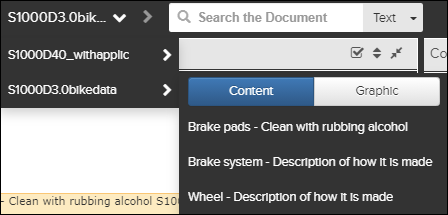
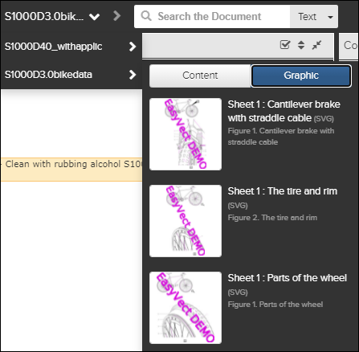
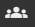
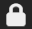
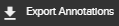
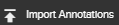
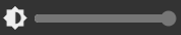
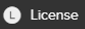
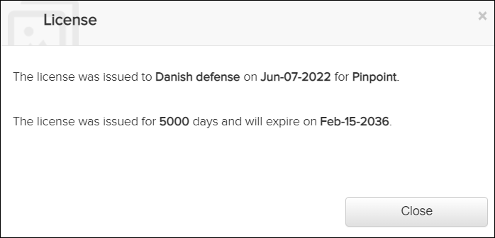
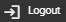

The Action Bar contains icons that allow you to perform actions in
Pinpoint. Some of the icons always appear on the Action Bar. Select the
 More icon at the end of the Action Bar to display
the drop-down menu, which contains additional icons. Other icons are responsive and can
appear in the drop-down menu if your page width is less than or equal to 1280 pixels.
More icon at the end of the Action Bar to display
the drop-down menu, which contains additional icons. Other icons are responsive and can
appear in the drop-down menu if your page width is less than or equal to 1280 pixels.
The table that follows describes the buttons and fields in the Action Bar:
| Location | Component | Description |
|---|---|---|
| Action Bar | The logo in upper left corner of the Action Bar. If you
click on this logo you will be directed "home" to the landing page, either the
default page, or a page defined in the Configuration Pane.
Note: The logo is customizable for individual customers needs. Refer to
"Organizations" in the Flatirons Access Control User
Guide.
|
|
| Action Bar |  Recent Content History Menu Recent Graphic History Menu |
This menu in the top Action Bar has two tabs, the
Content tab and the Graphic tab.
By default, the Content tab is selected and shows a list of pages that you have opened recently.. The most recently opened pages are at the top of the list. When you select a different publication, the selection changes to that publication. Click the Graphic tab to view a list of graphics that you have opened recently. The most recently opened graphics are at the top of the list. When you select a different publication, the selection changes to that publication. When you click a link for a symbolic link publication, the content or graphic for the original (target) publication opens. Note: The tab that you select persists when you expand the history
drop-down list again. For example, if you previously selected the
Graphic tab, that tab is selected
automatically.
|
| Action Bar | Use these buttons to navigate to the previous or next page of the history. Important: Pinpoint does not support navigating through documents using the
browser's back/forward button. These buttons should not be used at all in
Pinpoint.
|
|
| Action Bar | The Search field in the Action Bar
is available for all publication types. From the Search box, you can perform these
searches:
Note: The Text or FIN search you select is persistent. The next time you open your
browser, that option remains selected.
If the Predictive Search
with Autocomplete feature is enabled, a drop-down list appears with keyword
suggestions based on the search history, common misspellings, synonyms, and
abbreviations. Select a keyword, and press Enter.
You will then be redirected to the Full Text Search
pane where you can view the search results and optionally add more search
parameters. Note: If the beginning of your
input matches the most relevant suggestion, that suggestion is filled in
automatically.
You can select Advanced from the drop-down menu to open the Full Text Search pane without entering a value in the Search field. For more information, refer to Perform a Full Text Search. Refer to "Configuring Predictive Search with Autocomplete" in the Flatirons Pinpoint Configuration Guide. For a FIN search, select a publication that supports FIN searches, then select FIN from the drop-down menu. Enter the Functional Identification Number (FIN) you want to search for, and press Enter. You will then be redirected to the FIN/Zone/Panel Search pane where you can view the search results and optionally add more search parameters. For more information, refer to Perform a FIN, Zone, or Panel Search. |
|
| Action Bar | Not applicable for Pinpoint Standalone Light. This icon appears in the Action Bar for users that have Write permissions for the Can create or remove restricted links privilege in Access Control.Click the icon to open the Restricted link management dialog, which allows you to manage restricted links. Refer to Manage Restricted Links. |
|
| Action Bar | Not applicable for Pinpoint Standalone Light. This icon appears in the Action Bar for users that have permissions for the Can view import publication status privilege in Access Control. When clicking the icon, the user can view a list of all publications (imported data in descending order). This includes the current import status and progress, with a percentage of completion. Refer to Viewing Import Status for Publications.If you select the option to download the latest revisions manually in the
Configuration pane, the icon displays the number of
publication available to download, for example, Note: This icon may appear in the
|
|
| Action Bar |  Manage Current Revision |
Not applicable for Pinpoint Standalone Light. This icon appears in the Action Bar for users that have
permissions for the Can set privileges on revisions privilege in Access
Control. It will only appear for publications that are released. When clicking the
icon the user can assign permission to access the publication for a set of user
groups.
Note: Only the user groups in your organization are available to select
and allow access to the publication.
For more information, refer to Setting Privileges on Revisions. |
| Action Bar | Not applicable for Pinpoint Standalone Light. This icon opens a drop-down list of possible operations for the currently viewed publication. |
|
Not applicable for Pinpoint Standalone Light. This menu option makes the publication official and available for other viewers. Refer to Knowledge Center S Publish/Release Process. |
||
Not applicable for Pinpoint Standalone Light. This menu option removes the publication revision from Pinpoint and Data Manager. Refer to Knowledge Center S Publish/Release Process. |
||
Not applicable for Pinpoint Standalone Light. If the release fails, select this option to retry the release. Refer to Knowledge Center S Publish/Release Process. |
||
Not applicable for Pinpoint Standalone Light. If the rollback fails, select this option to retry the rollback. Refer to Knowledge Center S Publish/Release Process. |
||
Not applicable for Pinpoint Standalone Light. This menu option deletes the selected publication revision and imports it again from Data Manager. Refer to Knowledge Center S Publish/Release Process. |
||
Not applicable for Pinpoint Standalone Light. This menu option opens a log giving specific details about what happened during the release process. |
||
Not applicable for Pinpoint Standalone Light. If you are viewing a publication draft for a publication from Knowledge Center a/Pinpoint a, this menu option is shown. It migrates attachments for Knowledge Center a/Pinpoint a library revisions. Refer to Migrate Attachments. |
||
| Action Bar | Not applicable for Pinpoint Standalone Light. This icon opens the file selector window to allow the user to select a Pinpoint Neutral package or a single PDF file to import. Refer to Import Data Package.Note: This icon
may appear in the
|
|
| Action Bar | This icon displays in the Action Bar when the shopping
basket feature is enabled (the default behavior). When you add parts to the shopping
basket, the icon shows the number of items, for example, When you select the |
|
| Action Bar | The Filter pane is opened by clicking the Note: System administrators can configure the visible columns and
the order in the effectivity/applicability selection page. Also the format that
displays the selected products in the effectivity/applicability selection page and
the application header. Refer to the topic "Customize Effectivity Selection
Columns" in the Flatirons Pinpoint Configuration
Guide.
Note: This icon may appear in the
|
|
| Action Bar | Bookmark Manager | Click this icon to open the Bookmark Manager. For more information, refer to
Bookmarks Note: This icon may appear in
the
|
| Action Bar | Click this icon to open or save the current document as PDF. Note: This feature
is not available for HTML publications. An error message appears when you attempt
to print the publication.
Note: This icon may appear in the
|
|
| Action Bar | This icon opens the Pinpoint application in a new browser tab. The blue highlight is used to indicate that you are inside the application. The same color is applied on the Data Manager and Access Control icons when moving into these modules. | |
| Action Bar |
Not applicable for Pinpoint Standalone Light. This icon opens the Data Manager
in a new browser window.
Note: This icon shows in the Action
Bar only if the user has access to the Data Manager
application.
For instructions, refer to the |
|
| Action Bar |  Access Control |
Not applicable for Pinpoint Standalone Light. This icon opens the Access Control application in a
new browser tab.
Note: This icon shows in the Action Bar only
if the user has access to the Access Control application.
For instructions, refer to the |
| Action Bar | Tools |
Not applicable for Pinpoint Standalone Light. This icon opens a drop-down menu of links configured to external applications.
Click a link to open the application in a new tab.
Note: This feature must be
configured in Pinpoint server by an IT System Administrator. If it is not
configured, the icon is not visible. You must submit a service request to change
these links.
|
| Action Bar | Not applicable for Pinpoint Standalone Light. Opens a Configuration page where it is possible to define a Landing Page URL. For instructions, refer to Configuration Pane.Note: This icon may appear in
the
|
|
| Action Bar | Click this icon to select the language used for the Pinpoint application:
Note: Pinpoint determines the default language to use based on a cookie stored
on your computer. If a cookie is found for the language selection (English or
French), Pinpoint uses that language. If no cookie is found for the language
selection, Pinpoint uses the language found in the browser configuration (the
default browser language).
|
|
| Action Bar | Click this icon to display the drop-down menu with additional components. The
components listed always appear in the drop-down menu. If the page width is less than or equal to 1280 pixels, other icons with responsive behavior move to the drop-down menu. |
|
 |
Click this icon to export annotations. Refer to Annotations. | |
 |
Click this icon to import annotations. Refer to Annotations. | |
 Adjust Brightness |
Click this icon to display the Adjust Brightness bar. Adjust the slider to dim or brighten the display. | |
| Click this icon to open Help in a new browser window. The language of the user guide depends on the language selected for the application, either English (default) or French. | ||
 |
Click this icon to open the details of the License for
Pinpoint.  Refer to the topic "Configuring the License for Pinpoint" in the Flatirons Pinpoint Configuration Guide. |
|
 |
Click this icon to log out of the application. |